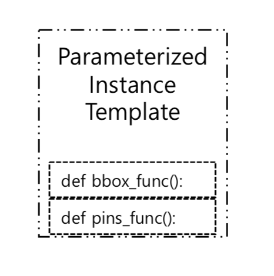
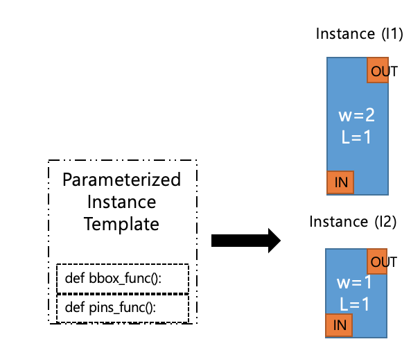

ParameterizedInstanceTemplate class#
- class laygo2.object.template.ParameterizedInstanceTemplate(libname, cellname, bbox_func=None, pins_func=None)[source]#
Bases:
TemplateParameterizedInstanceTemplate class implements the template that generate ParameterizedInstnace.
Notes
Reference in Korean: ParameterizedInstanceTemplate 클래스는 Parameterized Instance를 반환하는 템플릿을 구현한다.
Public Data Attributes:
Libname of the instance being generated.
Cellname of the instance being generated.
Public Methods:
__init__(libname, cellname[, bbox_func, ...])Generate ParameterizedInstanceTemplate object.
bbox([params])bbox of ParameterizedInstanceTemplate object.
pins([params])Return pin dictionary of ParameterizedInstanceTemplate object.
generate([name, shape, pitch, transform, params])Generate ParameterizedInstance object.
Inherited from
Template__init__(libname, cellname[, bbox_func, ...])Generate ParameterizedInstanceTemplate object.
__str__()Return a string corresponding to this object's information.
Return the summary of the template information.
height([params])int: Return the height of a template.
width([params])int: Return the width of a template.
size([params])int: Return the size of a template.
bbox([params])bbox of ParameterizedInstanceTemplate object.
pins([params])Return pin dictionary of ParameterizedInstanceTemplate object.
generate([name, shape, pitch, transform, params])Generate ParameterizedInstance object.
- __init__(libname, cellname, bbox_func=None, pins_func=None)[source]#
Generate ParameterizedInstanceTemplate object.
- Parameters
- Return type
laygo2.NativeInstanceTemplate
Examples
>>> def pcell_bbox_func(params): …… >>> def pcell_pins_func(params): …… >>> pcell_temp = laygo2.object.ParameterizedInstanceTemplate(libname='mylib', cellname='mynattemplate’, bbox_func= pcell_bbox_func, pins_func= pcell_pins_func) <laygo2.object.template.ParameterizedInstanceTemplate object>
Notes
Reference in Korean: ParameterizedInstanceTemplate 클래스의 생성자함수. 파라미터 libname(str): library 이름 cellname(str): cell 이름 bbox_func(callable): bbox pins_func(callable): pin 객체를 갖고있는 dictionary 반환값 laygo2.NativeInstanceTemplate 참조 없음
- bbox(params=None)[source]#
bbox of ParameterizedInstanceTemplate object.
- Parameters
None –
- Return type
Examples
>>> def pcell_bbox_func(params): if params==None: params={“W”:1} return np.array([[0, 0], [100 , 100* params['W']]]) >>> def pcell_pins_func(params): …… >>> pcell_temp = laygo2.object.ParameterizedInstanceTemplate(libname='mylib', cellname='mynattemplate’, bbox_func= pcell_bbox_func, pins_func= pcell_pins_func) >>> pcell_temp.bbox [[0,0], [100,100]]

Notes
Reference in Korean: ParameterizedInstanceTemplate 객체의 bbox. 파라미터 없음 반환값 numpy.ndarray 참조 없음
- generate(name=None, shape=None, pitch=None, transform='R0', params=None)[source]#
Generate ParameterizedInstance object.
- Parameters
name (str) – name of the instance to be generated.
shape (numpy.ndarray, optional.) – shape of the object to be generated.
pitch (numpy.ndarray, optional.) – pitch of the object to be generated.
params (dict, optional.) – dictionary having the entity attributes.
transform (str, optional.) – transformation attribute of the entity to be generated.
- Return type
(laygo2.object.physical.Instance) generated Instance object
See also
ClassExamples
>>> def pcell_bbox_func(params): …… >>> def pins_bbox_func(params): …… >>> pcell_temp = laygo2.object.ParameterizedInstanceTemplate(libname='mylib', cellname='mynattemplate’, bbox_func=pcell_bbox_func, pins_func=pcell_pins_func) >>> pcell_temp.generate(name=“I1”, params={“W”=2, “L”=1}) <laygo2.object.physical.Instance object> >>> pcell_temp.generate(name=“I2”, params={“W”=2, “L”=1}) <laygo2.object.physical.Instance object>Notes
Reference in Korean: ParameterizedInstance 객체 생성. 파라미터 name(str): 생성할 인스턴스의 이름 shape(numpy.ndarray): 생성할 객체의 shape [ optional ] pitch(numpy.ndarray): 생성할 객체간의 간격 [ optional ] params(dict) : 개체의 속성을 갖는 Dictionary [ optional ] transform(str): 생성할 개체의 변환 속성 [ optional ] 반환값 laygo2.Instance: 생성된 객체 참조 Class Instance
- height(params=None)#
int: Return the height of a template.
- pins(params=None)[source]#
Return pin dictionary of ParameterizedInstanceTemplate object.
- Parameters
None –
- Return type
Examples
>>> def pcell_bbox_func(params): …… >>> def pcell_pins_func(params): if params==None: params={"W":1} i = params['W'] template_pins = dict() pin_in = laygo2.object.Pin(xy =[ [ 0, 0], [100 , 0 ] ], layer=['M1', 'pin'], netname='in') pin_out = laygo2.object.Pin(xy =[ [ 0, 100], [100 , 100* i]], layer=['M1', 'pin’], netname='out') template_pins['in' ] = pin_in template_pins['out'] = pin_out return template_pins >>> pcell_temp = laygo2.object.ParameterizedInstanceTemplate(libname='mylib', cellname='mynattemplate’, bbox_func= pcell_bbox_func, pins_func= pcell_pins_func) >>> pcell_temp.pins {'in': <laygo2.object.physical.Pin object>, 'out': <laygo2.object.physical.Pin object>}

Notes
Reference in Korean: ParameterizedInstanceTemplate 객체의 pin dictionary 반환. 파라미터 없음 반환값 dict 참조 없음
- size(params=None)#
int: Return the size of a template.
- summarize()#
Return the summary of the template information.
- width(params=None)#
int: Return the width of a template.
- _abc_impl = <_abc._abc_data object>#
- _bbox = None#
- _pins = None#
{kind=link}
{kind=link}